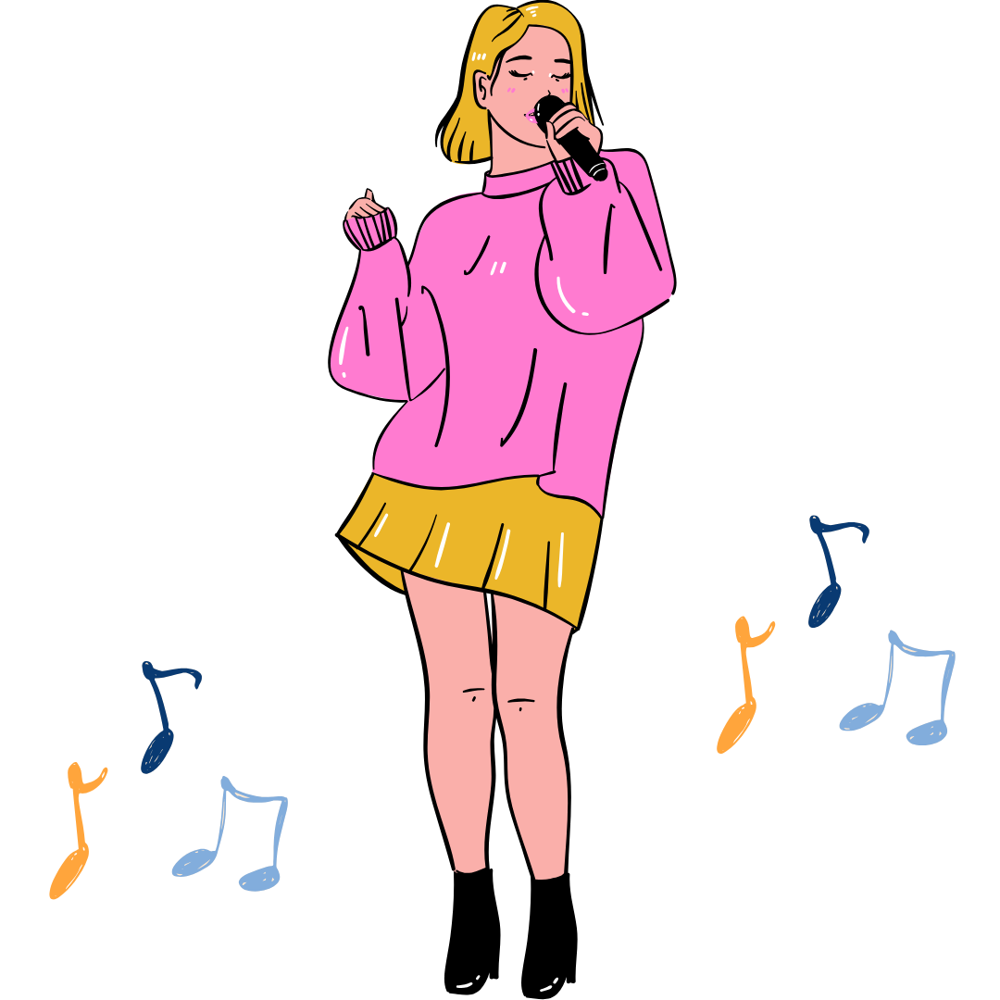

-
1. Taking Selfies
I love taking pictures to capture special moments and express myself. It's a fun way to document my day and share my experiences.
-
2. Listening to Music
This is a big part of my life. It helps me relax, set the mood, and energize me when I need a boost.
-

3. Singing
This is a way for me to express my feelings and emotions. I love performing my favorite songs whenever I can.
-
4. Playing Online Games
Mobile Legends: Bang Bang or 8 Ball Pool is an awesome way to challenge myself and connect with friends. I enjoy escaping into virtual worlds and having fun with others.
-
5. Watching Korean & Chinese Dramas
K-dramas and C-dramas are my go-to for entertainment. They offer amazing plots and characters that always keep me hooked.
-

6. Reading Wattpad Stories
Wattpad offers a variety of genres that I can explore, from romance to fantasy. I enjoy diving into new stories and experiencing different worlds.
-

7. Watching Movies
This is a great way for me to unwind. I enjoy watching all kinds of genres, from action-packed to heartwarming films.
-

8. Traveling
It gives me the opportunity to discover new places and cultures. It's exciting to hang out with my loved ones, meet new people and see the world in a different way.
-
9. Doing TikTok Videos
I enjoy making TikTok videos to show my creative side. It's a fun way to engage with others and share my personality.
-
10. Playing in Arcades
This is a good place to have fun with friends. I love competing in games like basketball and racing simulators, always trying to beat my high score.